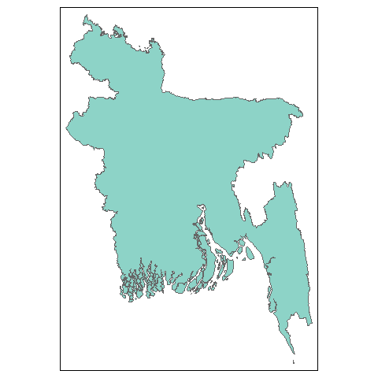
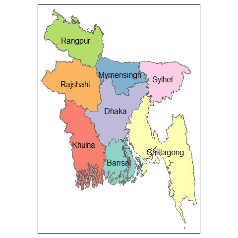
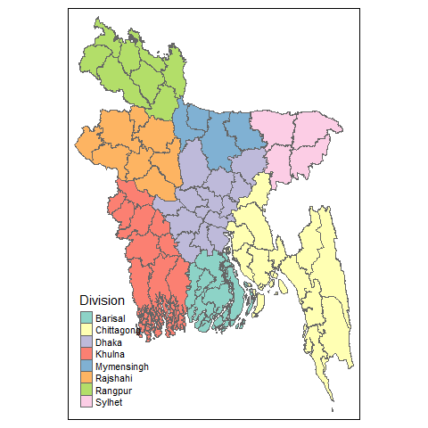
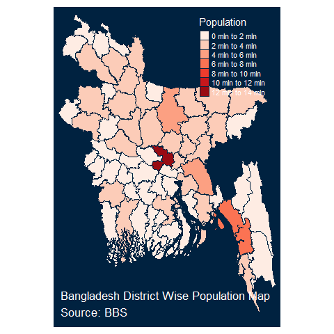
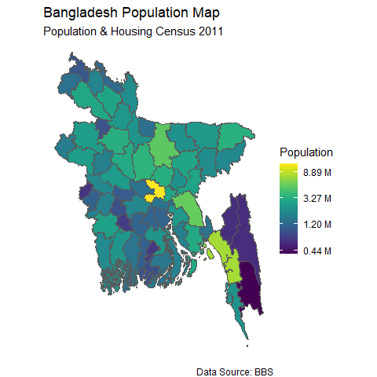
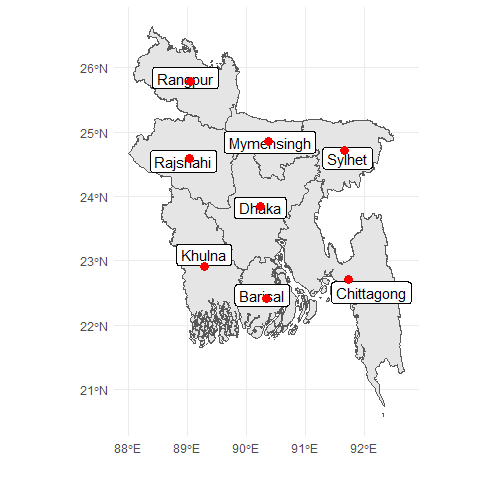
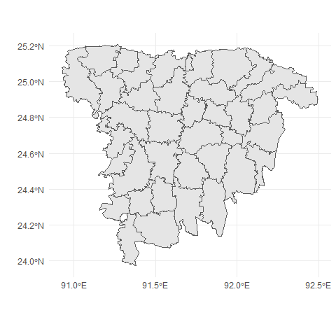
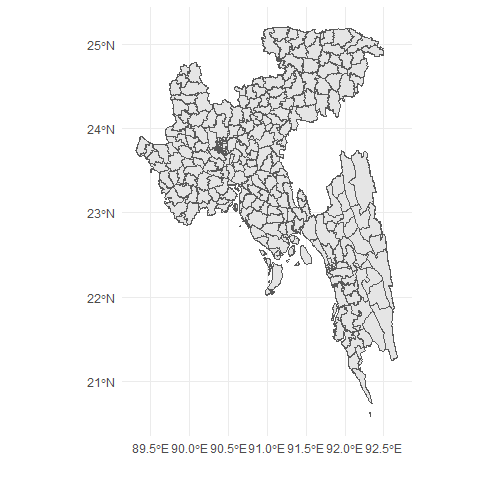
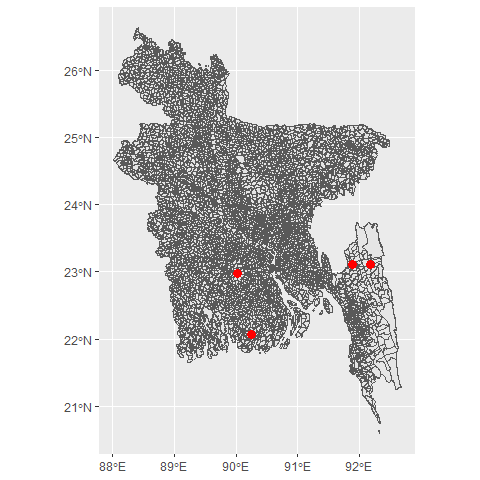

The bangladesh package provides ready-to-use shapefiles for different administrative regions of Bangladesh (e.g., Division, District, Upazila, and Union). Usually, it is difficult to plot choropleth maps for Bangladesh in R. This package will help users to draw thematic maps of administrative regions of Bangladesh easily as it comes with the sf objects for the boundaries and regions’ names in English. It also provides functions allowing users to efficiently get specific area maps and center coordinates for regions. Users can also search for a specific area and calculate the centroids of those areas.
This packages comes with sf objects for administrative levels 0-4 (Country, Division, District, Upazila, Union). The easiest way to get the shapefile for a level is to is to use get_map() function.
To start with we can check the sample function bd_plot() to draw the map of different administrative levels of Bangladesh, which uses tmap, a very flexible and cool package to visualize thematic maps.
bd_plot("country")
bd_plot("division")
bd_plot("district")
We can also plot beautiful interactive maps with this.
Using the tmap package (my favorite for creating thematic maps), we can make cool choropleths, both static and interactive. When plotting mode is chosen as static (plot) it returns a ggplot object, when interactive (view) it returns a leaflet object.
library(tmap)
population <- bangladesh::pop_district_2011[, c("district", "population")]
district <- get_map("district")
map_data <- dplyr::left_join(district, population, by = c("District" = "district"))
map <- tm_shape(map_data) +
tm_polygons("population",id = "District",palette = "Reds", title = "Population") +
tm_style("cobalt")+
tm_layout(
"Bangladesh District Wise Population Map\nSource: BBS",
title.position = c("left", "bottom"),
legend.position = c("right", "top")
)
tmap::tmap_mode("plot")
map To make it interactive we can do the following:
We can also use ggplot2 and leaflet to draw customized choropleths with the sf objects provided in bangladesh package.
library(ggplot2)
ggplot(data = map_data) +
geom_sf(aes(fill = population))+
theme_void()+
viridis::scale_fill_viridis(trans = "log", name="Population", labels = scales::unit_format(unit = "M", scale = 1e-6)) +
labs(
title = "Bangladesh Population Map",
subtitle = "Population & Housing Census 2011",
caption = "Data Source: BBS"
)
It is also possible to get the approximate center points (centroids) of administrative regions easily
by using get_coordinates() function in bangladesh package.
division_map <- get_map("division")
division_centroids <- bangladesh::get_coordinates(level = "division")
knitr::kable(division_centroids, format = "html")| Division | lat | lon |
|---|---|---|
| Barisal | 22.41889 | 90.34684 |
| Chittagong | 22.70692 | 91.73546 |
| Dhaka | 23.83870 | 90.24064 |
| Khulna | 22.91367 | 89.29437 |
| Mymensingh | 24.84675 | 90.38088 |
| Rajshahi | 24.58846 | 89.04540 |
| Rangpur | 25.77920 | 89.05685 |
| Sylhet | 24.71515 | 91.66400 |
ggplot(data = division_map) +
geom_sf() +
geom_sf_label(aes(label = Division)) +
geom_point(data = division_centroids, x = division_centroids$lon, y = division_centroids$lat, col = "red", size = 3) +
xlab("")+ ylab("")+
theme_minimal()
Suppose someone needs to plot partially a single or selected number of divisions instead of whole country map, in that case the function get_divisions() might be beneficial.
sylhet <- get_divisions(divisions = "Sylhet",level = "upazila")
# single division
ggplot(data = sylhet) +
geom_sf() +
xlab("")+ ylab("")+
theme_minimal()
#multiple division
sylhet_chittagong_dhaka <- get_divisions(divisions = c("Sylhet", "Chittagong", "Dhaka"),level = "upazila")
ggplot(data = sylhet_chittagong_dhaka) +
geom_sf() +
xlab("")+ ylab("")+
theme_minimal()
To search for an area within the provided names for administrative regions we can apply the bd_search() function. The result can also include centroids for those areas.
amtali <- bd_search("amtali", level = "union", as.is = T, coordinates = T)
knitr::kable(amtali, format = "html")| Division | District | Upazila | Union | lat | lon |
|---|---|---|---|---|---|
| Barisal | Barguna | Amtali | Amtali | 22.07564 | 90.24704 |
| Chittagong | Rangamati | Baghai Chhari | Amtali | 23.10561 | 92.18835 |
| Dhaka | Gopalganj | Kotali Para | Amtali | 22.98264 | 90.03085 |
| Chittagong | Khagrachhari | Matiranga | Amtali | 23.11700 | 91.88539 |
ggplot(bangladesh::map_union) +
geom_sf() +
geom_point(data = amtali, x = amtali$lon, y = amtali$lat, col = "red", size = 3) 